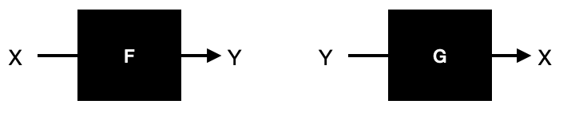
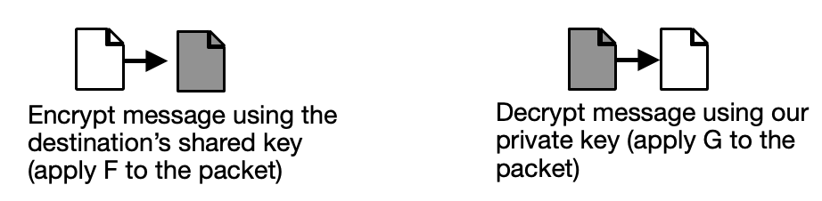
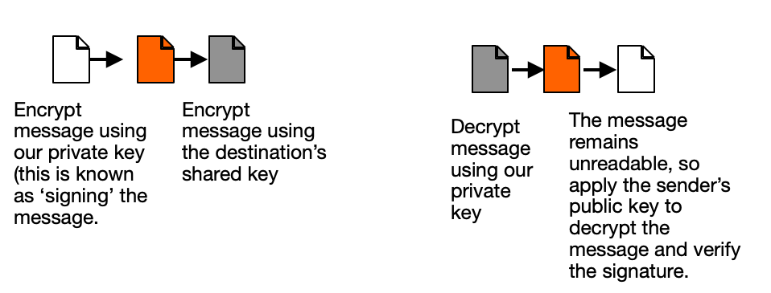
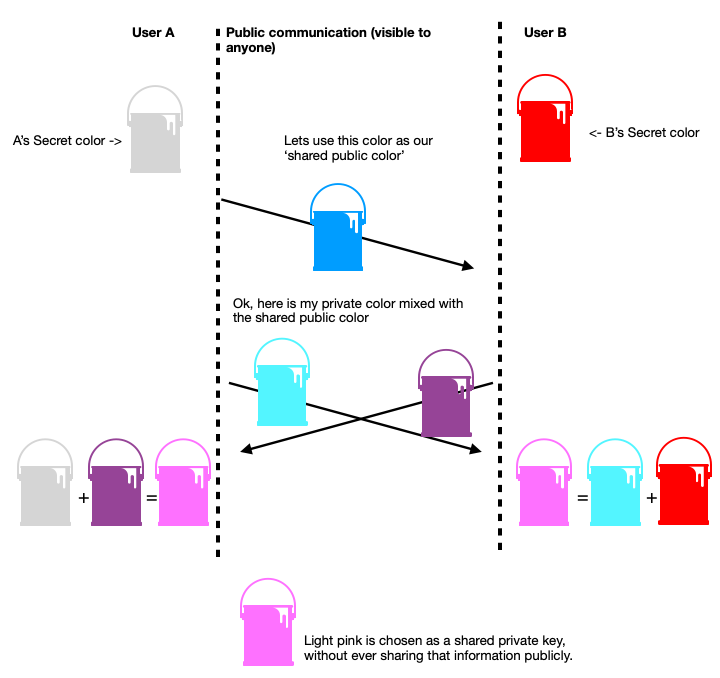

In the prior article, we talked about how encryption can be used to protect our privacy online.
Cryptography: the art of secrecy
There are two main theoretically models through which one can maintain privacy - hiding yourself from observation, or making your conversations too difficult for an outsider to understand. To use a real life model - playground secrets might be kept by whispering behind the gym, away from prying ears. Alternatively one could learn pig latin and speak in plain hearing of those around you (assuming they also don’t know pig latin). Both methods provide some level of security.
The first paradigm - hiding your manner of communication - is popularly known as ‘security through obscurity’, and is considered one of the weakest forms of security by cryptographers. It depends on a fragile assumption - your adversary must never learn the method of how you communicate. As soon as that secret is compromised, your privacy is irreversibly spoiled. Loose lips sink ships.
But how does one keep a 'public secret'? The answer is through the careful application of well-understood mathematical paradigms. This is the art which underpins the whole field of cryptography.
One way functions
Imagine there is an equation which takes a number X, and turns it into another number Y (these transformations of numbers are known in mathematics as functions). Now imagine that equation is special - it’s impossible to look at Y and determine what X is. It’s not because that equation is too complicated for a human to understand, or some other such obscurity, the output itself is impossible be examined and reversed. This is known as a ‘one way function’. If such a one way function exists, we can use it to make any communication secret.
The usage of one way functions to enshroud communication in a veil of privacy is possible through multiple algorithms. In the following sections we will look at several popular applications - RSA, Diffie-Hellman, and AES.
Rather than a true one-way function (which is unbreakable), cryptographic algorithms rely on functions which are so time consuming to break, that they are realistically irreversible even when the listener has access to incredibly advanced super computers and endless resources of time and money. The steps used to generate these functions are well documented and mathematically trivial - only requiring the generation of prime numbers and the application of some simple arithmetic. This makes cryptography a realistic privacy option regardless of the strength of an individual’s computer.
Asymmetric encryption - RSA
Imagine that there are two (nearly) one-way functions generated by the RSA algorithm, both of which are the inverse of the other. Let’s call them F and G. Passing X through F gives us Y, and passing Y through G gives us X again. We cannot look at F and Y and find X, and we cannot look at G and X and find Y, because neither of these functions are two way. This may seem insignificant, but we can use these elements to generate sophisticated methods of secure communication.

To enable secret communication, a person can choose one of these functions to remain private (let’s choose G) and one to give out into the world (F). Anyone who wishes to communicate privately with you can write down a message, and then convert that text into a very big number (typically on a computer, this is converting each character into its binary representation and stringing them all together into a series of digits). Then, that number can be passed through F in order to get a a new number known as a ‘cyphertext’, meaning a secret encrypted message. That cyphertext can be communicated openly - because only by applying the secret function G can the original message be reconstituted.
Rather than trying to generate a fully unique equation on every encryption, a standard equation is used and the values in that equation modified. These values are very large numbers, which are known as keys - because they can be used to ‘lock’ and ‘unlock’ data. One key is kept private, and the other is published as your public key: available to anyone interested in communicating privately with you. Because the sender of a message does not have access to the recipients decryption key, RSA is considered an ‘asymmetric’ cryptographic algorithm - other algorithms (such as AES) assume a key is held in common between the sender and recipient.
We have already seen asymmetric encryption in use in the previous article. When we have shown a packet becoming grey, it indicates the packet undergoing encryption using a one way function - such as the application of a key.

To provide further assurances of data protection, we can take an additional step and ‘sign’ the message. To do this, we encrypt our packet with our private key (the function F) prior to encrypting with the recipients public key and sending it. Anyone who receives the message may decrypt it using our shared key, and thereby prove that whoever sent it had control over our private key, and also know the message was not tampered with in transit.

This is quite the bonus! Using RSA we are able to communicate secretly, and be confident in both the identity of the sender and the fidelity of the message.
Symmetric encryption - AES and Diffie-Hellman
Unlike asymmetric encryption, symmetric encryption requires that the same secret information be available to both the sender and receiver of a message in order to encrypt and decrypt. The oldest and most robust example of symmetric encryption is the one time pad. A common tool in espionage to this day, a one time pad is a specialized codebook printed in pairs. In this codebook a long series of numerical codes are written which can be combined with letters to translate a message into unreadable gibberish. Both the sender and receiver retain a copy of the book, but use it only once (either to encrypt or decrypt a message - depending on if they are the sender or receiver) before being destroying it. This encryption method is unbreakable.
The one time pad is notorious for being difficult to use. Codebooks must be frequently exchanged in person and then destroyed. A more usable alternative form of symmetric encryption is the advanced encryption standard (AES). Similar to RSA, AES also requires a public key and a private key. But there is a slight difference in nuance, a ‘shared key’ is generated between a client and recipient using a mixture of public and private keys, and that shared key is used by both parties for both encryption and decryption. The most well known process of co-generating a shared key is called the Diffie-Hellman protocol.
The common example which explains the D-H protocol is to think of mixing paint. Let’s say instead of creating a function F, we are making a secret color F. But how can we mutually determine a color without also sharing to everyone else what it is? (Note that this example only makes sense if we assume we cannot easily ‘un-mix’ colors to their component parts, we are treating paint mixing as a one way function).
First, someone picks and communicates a shared public color - everyone can see this color, including outside observers. Then, both parties mix a secret private color with it and sends that new mixed color back. Finally, that intermediary color is received from the sender and their private color again mixed in. Now both individuals have possession of a shared color without ever communicating it explicitly.

Using this example, we can see how a shared key can be made without ever explicitly communicating it where others can read it. Because a single key is shared between two parties, it is considered ‘symmetric encryption’. AES is an encryption algorithm which requires symmetric encryption, and thus relies on key sharing mechanisms such as Diffie-Hellman to generate that key securely if the two parties cannot join each other and physically share the key securely (such as having it written on a piece of paper nobody else has seen).
Conclusion
Encryption is the process of using math to make information secret. This is done through some clever uses of 'one way functions'. In our next article, we'll take a look at the major encrypted comminication platforms and how effective they are.